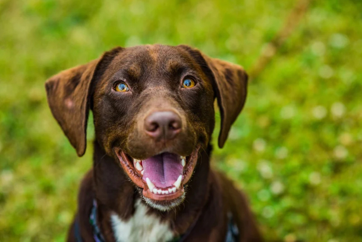
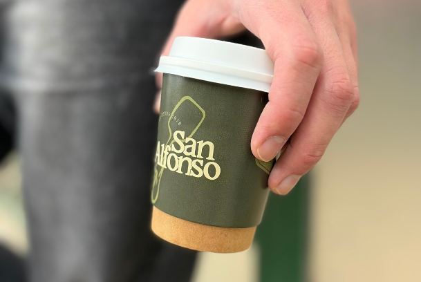

MUY CELINA® / SELECTED WORKARCHIVO CREATIVO · 2026
PORTFOLIO / PROYECTOS
IDEAS QUE SE VEN.
IDEAS QUE FUNCIONAN.
Proyectos reales, ideas que toman forma y soluciones donde se encuentran la estrategia, el diseño y la tecnología.
DESLIZÁ PARA EXPLORAR ↓
↗Veterinaria Alem
Coordinación de campañas y comunicación comercial para una red de sucursales.
EXPLORAR PROYECTO ↗
San Alfonso
Una marca que evoluciona, una comunicación que la acompaña.
EXPLORAR PROYECTO ↗
Ingeniería para Empresas
Transformar proyectos técnicos en una identidad digital.
EXPLORAR PROYECTO ↗
Incubando Empresas
Reconstruir una presencia digital y sentar las bases para crecer.
EXPLORAR PROYECTO ↗
Alfabetización Financiera
Construir una marca desde el conocimiento.
EXPLORAR PROYECTO ↗
Club Alem
De la compra puntual a una experiencia de cuidado continuo.
EXPLORAR PROYECTO ↗
Cotizador de peluquería
Menos incertidumbre antes de reservar.
EXPLORAR PROYECTO ↗Fátima Aguilar
Construir una identidad desde cero.
EXPLORAR PROYECTO ↗DETRÁS DE CADA PROYECTO
Creatividad para pensar.
Creatividad para pensar.
Estrategia para hacer.
Del concepto a la ejecución: ideas, contenido y decisiones pensadas para cada marca.